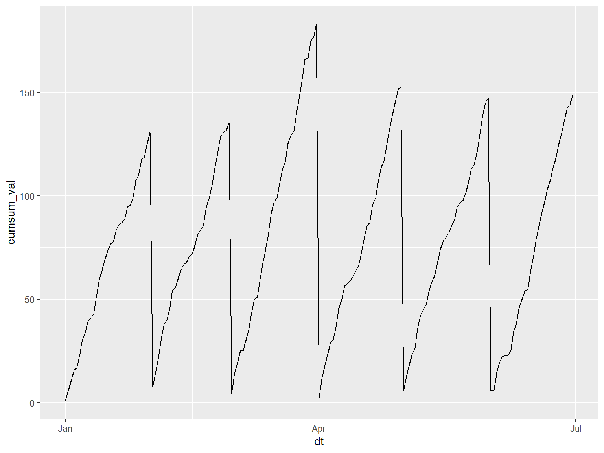

Computing Agroclimate Metrics in R
Part II. Cummulative Metrics and Multi-Year
Summaries

December
2,
2022
https://ucanr-igis.github.io/agroclimR/

Phenology Tables
Degree days are not very useful by themselves. You need to use them
with a phenology table that predicts when events will take
place based on accumulated degree days.
Phenology tables also tell you when to start counting degree
days (i.e. biofix).
The biofix could be a calendar date, or the date of an observation
such as when you see eggs in your traps.
R-tricks: Date Parts
Analyzing multi-year data often requires using date parts
(e.g., month, year, Julian day), for filtering and grouping.
The lubridate package has functions you can use to
define date parts. Examples:
(x <- as.Date("2022-09-05"))
## [1] "2022-09-05"
lubridate::day(x)
lubridate::month(x)
lubridate::year(x)
lubridate::yday(x) ## 'Julian' date
## [1] 5
## [1] 9
## [1] 2022
## [1] 248
R-tricks: Converting Units
Weather data often requires you to convert units.
The units package comes with a database of conversion
constants so you don’t have to look them up.
Many R packages (including API clients) are returning values as
‘units’ objects (numeric values with units attached).
Example:
library(units)
boiling_int <- 212 ## plain number
boiling_f <- set_units(boiling_int, degF) ## a 'units' object
boiling_f
## 212 [degF]
boiling_c <- set_units(boiling_f, degC) ## convert to degrees Celsius by setting different units
boiling_c
## 100 [°C]
R-tricks: Grouping Rows of Data
For multi-year or multi-site data, you often need to work with
groups of rows.
To work with groups in dplyr, we add functions that:
- define the groups
- do something with those groups
1. Define groups
group_by()
The argument(s) to group_by() should be column(s) or
expression(s) that defines the row groups.
Each unique value will become a group of rows.
Example:
storms |>
group_by(year) |> ## group the rows by year
head()
## # A tibble: 6 × 13
## # Groups: year [1]
## name year month day hour lat long status categ…¹ wind press…² tropi…³
## <chr> <dbl> <dbl> <int> <dbl> <dbl> <dbl> <chr> <ord> <int> <int> <int>
## 1 Amy 1975 6 27 0 27.5 -79 tropi… -1 25 1013 NA
## 2 Amy 1975 6 27 6 28.5 -79 tropi… -1 25 1013 NA
## 3 Amy 1975 6 27 12 29.5 -79 tropi… -1 25 1013 NA
## 4 Amy 1975 6 27 18 30.5 -79 tropi… -1 25 1013 NA
## 5 Amy 1975 6 28 0 31.5 -78.8 tropi… -1 25 1012 NA
## 6 Amy 1975 6 28 6 32.4 -78.7 tropi… -1 25 1012 NA
## # … with 1 more variable: hurricane_force_diameter <int>, and abbreviated
## # variable names ¹category, ²pressure, ³tropicalstorm_force_diameter
Note - nothing looks different! This is because the groups are
defined invisibly.
To do something productive with the groups, we have to add something
else…
2a. Compute
Metrics for Each Group Separately
group_by() + mutate()
When working with cumulative metrics (i.e., chill portions) for
multiple years of data, you may want to calculate the metric for groups
of rows. You can compute metrics for groups of rows by following
group_by() with mutate().
Example:
We make a fake time series dataset consisting of a random number 0-10
each day for a year:
val_tbl <- tibble(dt = seq(from = as.Date("2010-01-01"),
to = as.Date("2010-06-30"),
by = 1)) |>
mutate(val = runif(n(), min = 0, max = 10))
val_tbl |> head()
## # A tibble: 6 × 2
## dt val
## <date> <dbl>
## 1 2010-01-01 1.15
## 2 2010-01-02 4.58
## 3 2010-01-03 4.46
## 4 2010-01-04 5.44
## 5 2010-01-05 1.10
## 6 2010-01-06 6.11
Next we compute the cumulative sum of val for each month
(note how month is computed on-the-fly by
group_by()):
val_cumsum_bymonth_tbl <- val_tbl |>
group_by(month = lubridate::month(dt)) |>
mutate(cumsum_val = cumsum(val))
val_cumsum_bymonth_tbl |> head()
## # A tibble: 6 × 4
## # Groups: month [1]
## dt val month cumsum_val
## <date> <dbl> <dbl> <dbl>
## 1 2010-01-01 1.15 1 1.15
## 2 2010-01-02 4.58 1 5.73
## 3 2010-01-03 4.46 1 10.2
## 4 2010-01-04 5.44 1 15.6
## 5 2010-01-05 1.10 1 16.7
## 6 2010-01-06 6.11 1 22.8
Plot it to see the pattern:
ggplot(val_cumsum_bymonth_tbl, aes(x = dt, y = cumsum_val)) + geom_line()

2b. Compute Summaries for
each Group
group_by() + summarize()
Commonly used in analysis,summarize() will create
column(s) of summary statistics for each group of rows.
To define the summaries, you can use any aggregate function that
takes a vector of values and returns a single value. Examples:
n(), mean(), sum(), median(), min(), max(), first(), last(), sd(), IQR()
Example: How many category 4 and higher storms were there
each month?
library(dplyr)
storms |>
select(name, month, category, hurricane_force_diameter) |> ## select the columns we need
filter(category >= 4) |> ## filter those rows where category >= 4
group_by(month) |> ## group the rows by month
summarize(num_hurricanes = n(), ## for each group, report the count
avg_diam = mean(hurricane_force_diameter, na.rm=TRUE))
## # A tibble: 5 × 3
## month num_hurricanes avg_diam
## <dbl> <int> <dbl>
## 1 7 12 63.6
## 2 8 95 92.9
## 3 9 275 86.7
## 4 10 91 78.2
## 5 11 24 51.9